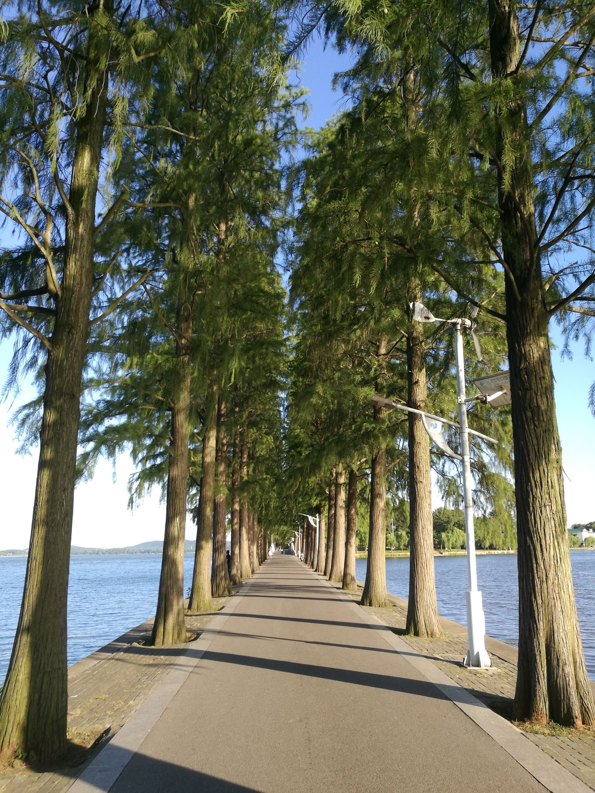
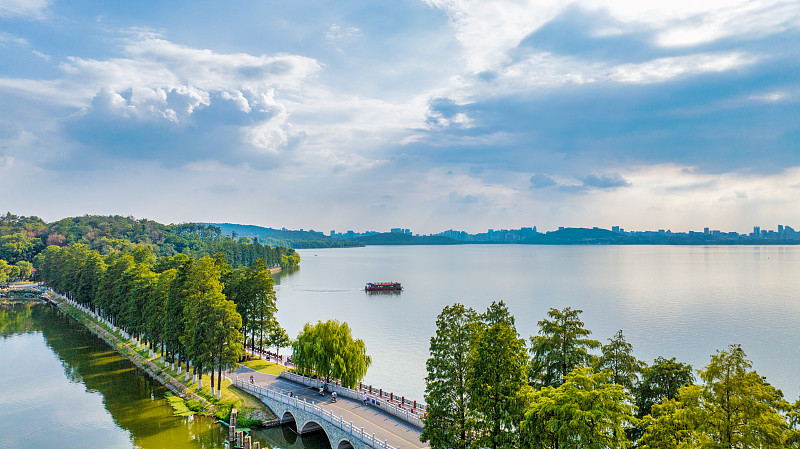
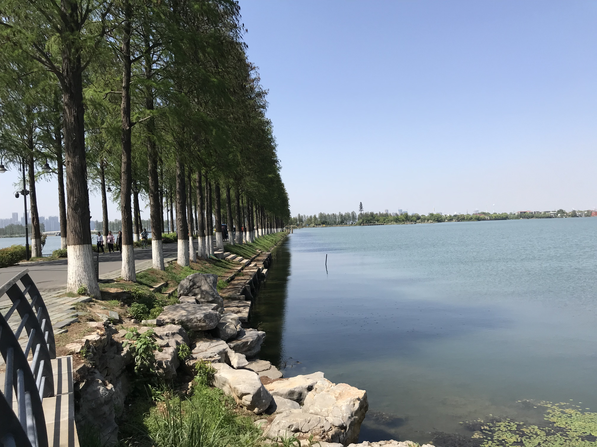

L·01

东湖 · 水杉夹道水杉夹道
步道两侧水杉笔直排列，树冠在头顶合拢，阳光从枝叶间漏下来，沿湖一路安静延伸。
看过江与楼，再把脚步交给东湖。环湖绿道沿水面铺开，长堤、水杉与开阔湖面连成一线， 远处是城市天际线，近处是树影和水波。这里节奏更慢，适合散步、骑行，或是临湖坐一会儿。


东湖 · 水杉夹道步道两侧水杉笔直排列，树冠在头顶合拢，阳光从枝叶间漏下来，沿湖一路安静延伸。

东湖 · 湖岸林荫沿水小路被树荫覆盖，湖面平静，偶有小船划过，是近距离看水色的一段。
 湖岸 · 水天一线
湖岸 · 水天一线
傍晚水面泛着暖光，对岸城市轮廓淡淡铺在天际，风平浪静时视野很开阔。

东湖 · 湖岸石滩岸边石块沿着水线铺开，树影垂向水面，近看是湖岸最朴素安静的一段。
东湖绿道很长，不必走完一整圈。挑一段临湖的路散步或骑行， 看树影在水面移动，比赶景点更放松。
天气好的傍晚，湖面和远处楼宇都会被染上暖色； 阴天则是另一种安静的灰绿色调，各有各的氛围。